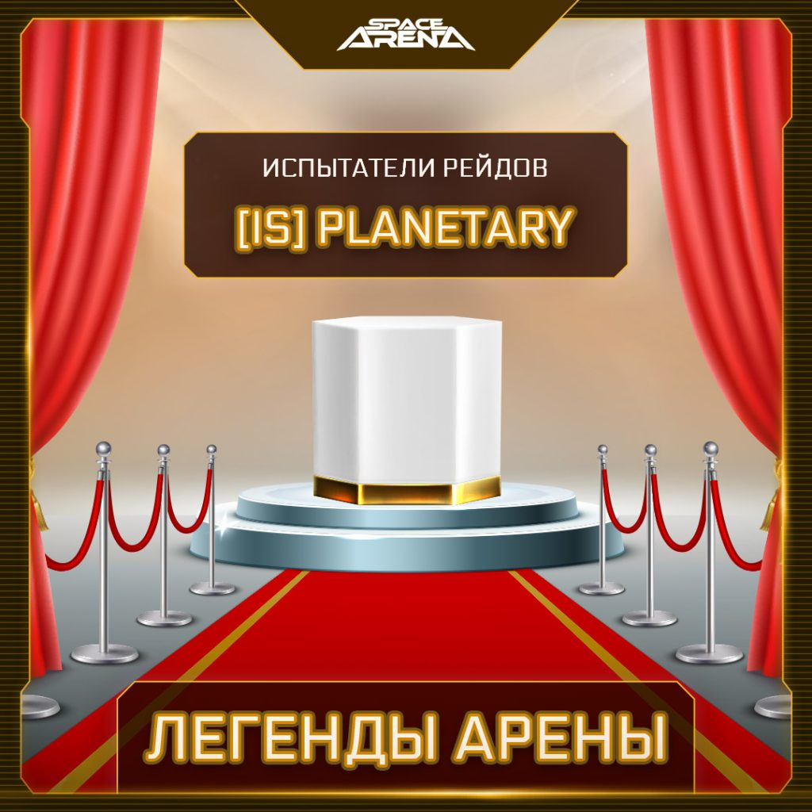
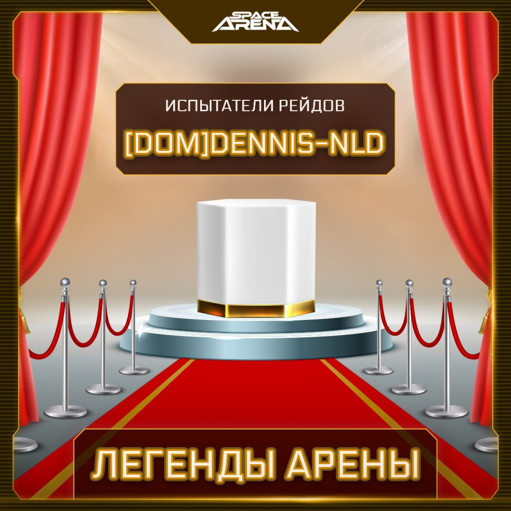

Штаб продолжает рубрику «Легенды Арены»! Напомним: в “Легендах” увековечены имена тех Командиров и деятелей Арены, достижения которых достойны того, чтобы их запомнить.
А может быть, вам тоже есть чем поделиться? Напишите сотруднику Штаба в наших соцсетях ТГ или ВК! Как знать, возможно и ваше имя войдет в историю…
Сегодня мы расскажем о двух Командирах, решившим бросить вызов опасностям, которые обычно подстерегают тех, кто сопровождает Торговые Консорциумы. Вы все правильно поняли — речь про событие Рейды.
Командир [IS]Planetary продумал самое настоящее испытание для закаленных в боях ветеранов Арены. Испытание подразумевало пройти Рейды без трат руды и Селестий на ремонт, восстановление, пересборку кораблей, а также без покупки руды. На предложенное испытание отликнулся завсегдатай Рейдов, экспериментатор [DOM]Dennis-NLD. Сам создатель испытания тоже был готов его опробовать.
И вот, настал день Х. Первая попытка обоих Командиров увенчалась лишь частичным успехом: [IS]Planetary застрял на 19 этапе, а [DOM]Dennis-NLD — на 13. Однако вскоре Командиры собрались с силами и мыслями и выполнили испытание! [DOM]Dennis-NLD задействовал корабли Miran, Orkaan и Hammerhead в ходе Рейдов на Фрегатах. [IS]Planetary выполнил испытание, пока проходил Рейды на Крейсерах. Для этого он задействовал EL-K, Miran и Orkaan.
Безусловно, оба Командира заслуживают не только поощрение от Штаба в виде галактик, но и звание Испытатели Рейдов в зале славы Арены.
Но а на этом у нас всё. С нетерпением ждём от вас новых рекордов, смело пишите о своих достижениях, уверены, вам есть что сказать и рассказать. Желаем всем удачи и будем рады рассказать о новых Легендах.
До встречи на Арене, Командиры!

